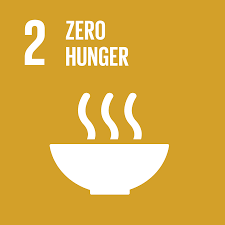
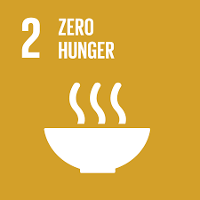

Projects Undertaken
Life on Land and sustainable communities
Jungle Jeevika
People in tribal villages have lived in harmony with forests. This project builds on this foundation coupling conservation (of Jungle) and livelihood (Jeevika). 12 village Gramsabhas are participating in this project with the goal of restoring what is weak, growing what is most wanted, and controlling harvest to sustain it. This project covers over 1,400 hectares of community forests.
Biodiversity registers
Thirteen villages have participated in this exercise documenting their traditional knowledge about the forest resources and biodiversity. Average 200 plant species are documented. This documentation goes on for a year and is interspersed with voluntary activities for conservation and protection.
Product Development
We have developed many nutrient-rich products using local raw materials. These products includes RUSF, RUTF and health-drinks. The cost of these products is cheaper as compared to the products in the existing market. These products can be prepared at household as well.

Forest food festivals
These festivals are organised by village assemblies (Gram-Sabhas) and guided by Vayam. The purpose is to document wild edibles and transfer the knowledge to the next generation. The festivals are not for marketing of rare wild edibles. It is a village festival to protect and sustain this super-organic free food and give it its due prestige and protection. 68 villages have conducted such festivals so far. Over 76 wild edible plants are documented.
Honey-bee keeping
People know how to handle wild bees and how to extract honey. But to make it sustainable, Vayam has introduced wild honey-bee farming. Extracting nothing from the forest, but getting ecological dividends that can assure income and livelihood. Currently, 50 tribal families are participating in this.
Forest Rights awareness
Vayam has helped tribal farmers and forest dwellers acquire their land rights as per the Forest Rights Act 2006. We have put our efforts into capacity building of villagers, frontline government persons, and lobby for rights from district to state level. We have successful in securing land rights of 4,500 farmers. We have also helped 15 villages secure Community Forest Resource Rights over an average of 100 hectares each.
Strong inclusive community institutions
Padopadi Swaraj
Pada means a small hamlet and our constitution says that each village shall have a Gram-Sabha; a self-governing assembly. ‘Padopadi Swaraj’ is our endeavour to take the constitutional provisions to every small village i.e. padopadi. Vayam has helped many villages across four tribal blocks to build strong community institutions; i.e. Gram-Sabha. These Gram-Sabhas are legally recognized local governing bodies with direct participation of citizens. The empowered Gram Sabhas have brought openness in government schemes, transparency in funds, and have framed rules for judicious extraction from forest and water sources.
PESA Jagran Abhiyan
Through this initiative we aim to bring new villages in the realm of effective and just self-governance as envisaged in PESA (Panchayats Extension to Scheduled Areas) law. The law requires that a majority of voters in a small .hamlet or Pada sit together and pass a resolution for notifying a separate Gramsabha. Vayam volunteers fan out to far-off villages, to alert and motivate people to become self-reliant through their own Gram Sabhas. Many villages have responded positively and received separate Gram-Sabha status as well as funds to run it efficiently.
Zero hunger and miscellaneous work
Zero migration NREGA
National Rural Employment Guarantee Act (NREGA) assures all villagers unskilled wage employment in their own village, only if they demand so. From fighting the bureaucracy about non-availability of demand forms, to getting wages on time, and to exposing corruption - Vayam team has taken on every battle. And has won - for 18,000 families from 200+ villages - decent work and wages. Many villages are self-reliant and Vayam is proud that these villages don’t need Vayam’s help anymore. This has reduced the distress migration of people and has brought stability in families and security for children.
Suposhan - bhaji-wadi and Jalkund
Vayam team noticed that people grow vegetables in their backyards in monsoon. Once the monsoon is over, fresh vegetables vanish from their daily diet. This contributes to the infamous malnutrition problem of tribals. Vayam introduced a 20 sq.m. mini-veggie-farm (Bhaji wadi) along with a mini-farm-pond (5000 liters with geo-membrane mulching) to water the mini-farm for at least five to six months. This has assured fresh vegetables in the daily diet of 300 tribal families. There is no better guarantee of ‘Zero Hunger’ than people being able to grow and eat their own food.
Quality Education

Dhadpad Prayogshala
This is a small make-n-break laboratory set up by Vayam in all local government (ZP) high schools. Children can make many models (as well as break them) in this laboratory that covers the entire science curriculum of high schools. The models use all low-cost trash material easily accessible to children. The principle and practice of ‘Learning by Doing’ has made science easy.
SDGs we work on
 
